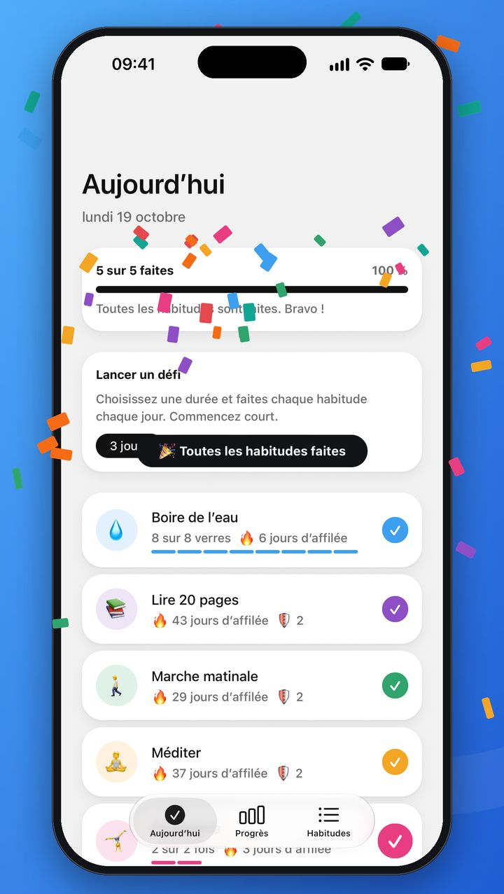
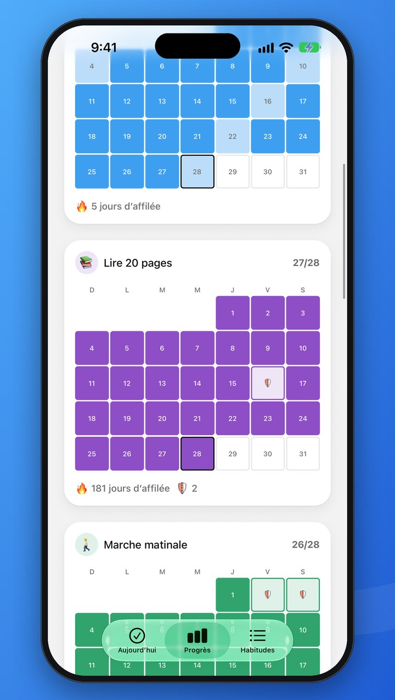
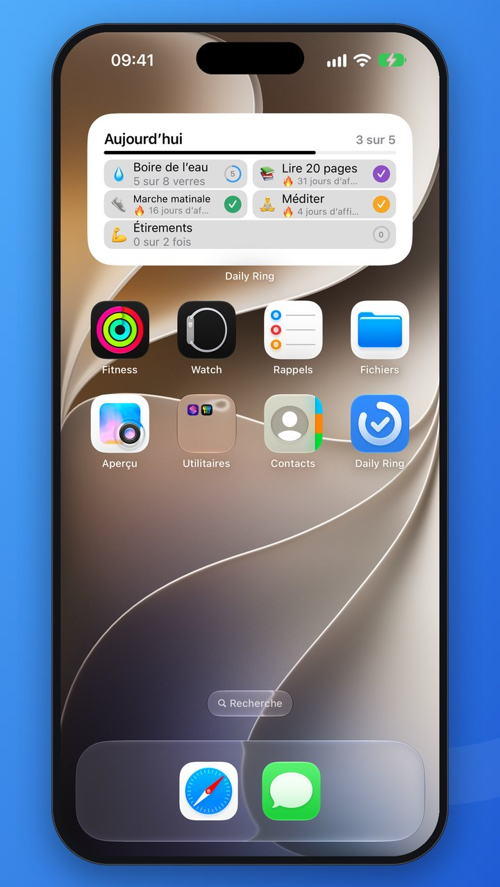
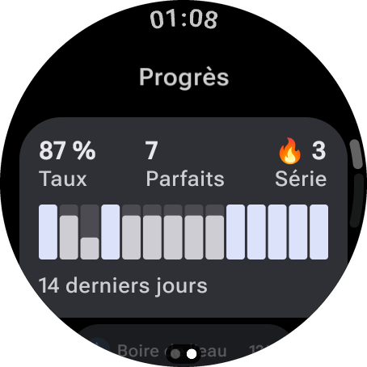
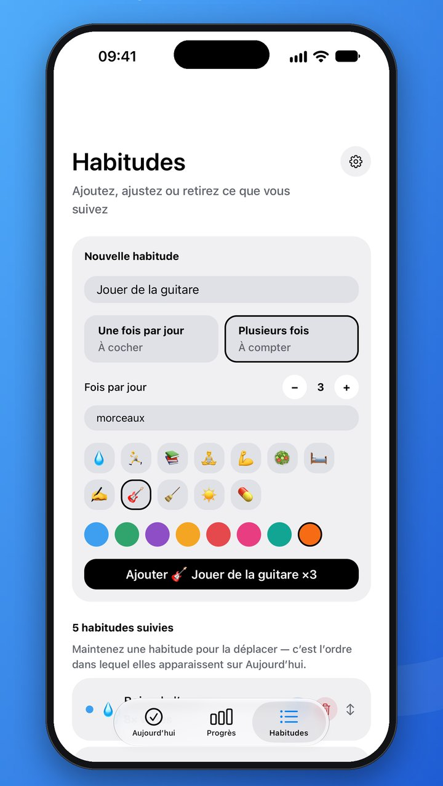
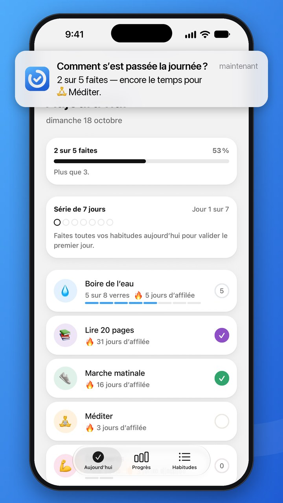
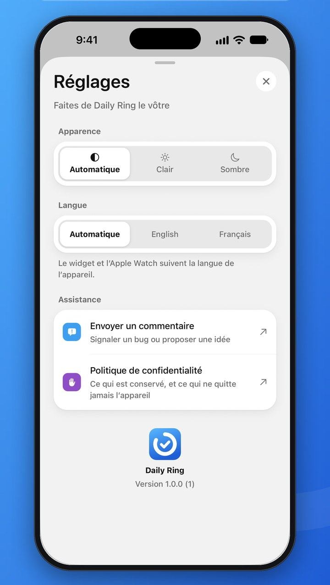
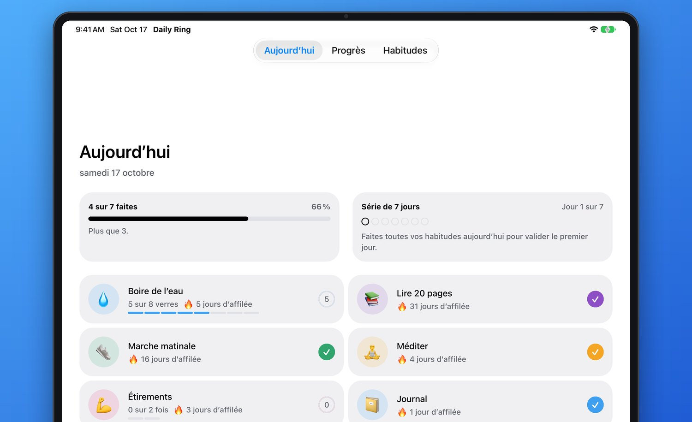
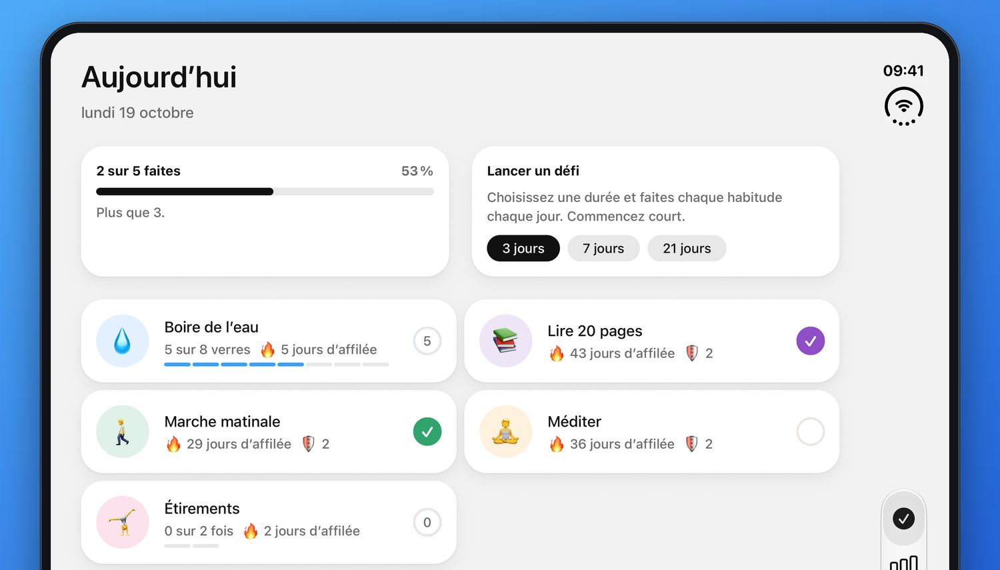

De bonnes habitudes
en un geste.
Daily Ring rend les bonnes habitudes faciles à tenir. Touchez une habitude pour la cocher, choisissez vos jours et regardez vos séries grandir. Gratuit, et prêt en quelques secondes.
Découvrir comment ça marcheiPhone · iPhone Duo · iPad · Apple Watch · Android · Wear OS
Prêt en une minute
Pas de compte. Un court accueil vous présente les fréquences et les boucliers de série, règle vos rappels et votre premier défi, et les habitudes d’exemple vous attendent déjà.
-
Choisissez vos habitudes
Gardez les quatre exemples ou ajoutez les vôtres : une fois par jour ou un compte comme 8 verres d’eau, chaque jour ou seulement les jours de votre choix.
-
Touchez pour cocher
Un geste dans l’app, sur le widget de l’écran d’accueil ou sur votre montre, et un petit son pour vous féliciter.
-
Suivez vos progrès
Séries, calendrier du mois et défis de 3, 7 ou 21 jours : voyez le chemin parcouru, et gardez l’envie de revenir.
Petits pas. Chaque jour.
Tout ce qu’il faut pour prendre une habitude, et rien qui vous gêne.

Chaque coche fait plaisir
Une légère vibration, un son joyeux et des confettis quand vous bouclez la journée. De petites récompenses qui donnent envie de revenir demain.
- Vibrations et sons à chaque geste
- Maintenez une habitude pour annuler une erreur
- Une fête quand toutes les habitudes sont faites
- Ne coupe pas votre musique
Au rythme de votre semaine
Toutes les habitudes ne sont pas quotidiennes. Choisissez les jours qui conviennent à chacune, ou simplement combien de fois par semaine, et Daily Ring ne compte que les jours prévus. Un jour manqué malgré tout ? Un bouclier de série prend le relais.
- Chaque jour, certains jours ou quelques fois par semaine
- Les habitudes hebdomadaires attendent dans En option aujourd’hui jusqu’à ce qu’elles soient dues
- Chaque série de 7 jours réussis vous vaut un 🛡️ bouclier, jusqu’à 2
- Un bouclier couvre un jour manqué : la série continue

Regardez vos séries grandir
Vos 14 derniers jours d’un coup d’œil, un calendrier du mois à feuilleter, et toute l’année de chaque habitude en carte de chaleur. Un progrès qu’on voit est un progrès qu’on garde.
- Score de régularité et journées parfaites
- Un calendrier du mois à feuilleter vers le passé
- Une carte de l’année pour chaque habitude, avec Plus
- Des défis de 3, 7 ou 21 jours pour aller un peu plus loin

Cochez depuis l’écran d’accueil
Le widget interactif met les habitudes du jour là où vous regardez le plus. Touchez une ligne pour la noter, sans même ouvrir l’app.
- Widget interactif sur l’écran d’accueil
- Touchez une ligne pour noter, sans ouvrir l’app
- Sur iPhone et Android
- Le petit widget est gratuit, les plus grands font partie de Plus

Au creux de votre poignet
Daily Ring Plus est livré avec une app Apple Watch et une app Wear OS. Jetez un œil à votre journée, touchez une habitude pour la noter et balayez pour voir vos deux dernières semaines. Votre téléphone peut rester dans votre poche.
- Notez vos habitudes depuis l’Apple Watch ou Wear OS
- Vibrations, sons et confettis au poignet
- Toujours en phase avec votre téléphone

Comptez ce qui compte
Certaines habitudes se font une fois, d’autres s’additionnent. Suivez 8 verres d’eau, 20 pages ou 3 séries de répétitions, ou cochez simplement « fait ».
- Habitudes quotidiennes ou à compter
- Choisissez une icône et une couleur
- Glissez pour réordonner, partout à la fois

Un rappel au bon moment
Des rappels matin et soir qui savent ce qu’il vous reste, pour qu’un rappel veuille toujours dire quelque chose. Donnez aussi à chaque habitude sa propre heure. Tout reste sur votre appareil.
- Un point le matin et le soir, aux heures de votre choix
- Un rappel par habitude, seulement les jours où elle est prévue
- Sauté une fois l’habitude faite
- Aucun serveur de notifications, aucun pistage

À votre image
Touchez la roue dentée de l’onglet Habitudes pour choisir le mode clair ou sombre, ou laisser Daily Ring suivre votre appareil. Choisissez aussi le français ou l’anglais. Chaque choix s’applique dès que vous le touchez, et chaque fiche se ferme d’un simple glissement vers le bas.
- Clair, sombre ou automatique
- Français ou anglais, quelle que soit la langue du téléphone
- Envoyez un commentaire depuis l’app
Superbe sur tous les écrans
Deux colonnes sur iPad et sur l’iPhone Duo ouvert, un widget sur l’écran d’accueil, un geste au poignet, et des modes clair et sombre agréables pour les yeux, de jour comme de nuit.


De petites victoires, toute la journée
Quelques-uns des moments pour lesquels Daily Ring est conçue.
-
Huit verres, un geste à la fois
Comptez vos verres d’eau au fil de la journée et regardez la barre se remplir.
-
Cochée avant d’avoir passé la porte
De retour de votre marche matinale ? Cochez-la sur votre montre, le téléphone dans la poche.
-
Fait sans ouvrir l’app
Touchez une ligne du widget de l’écran d’accueil : c’est noté. C’est tout.
-
Un rappel qui sait ce qu’il reste
Le rappel du soir vous dit ce qu’il reste à faire : il tombe toujours à propos.
-
La journée entière, bouclée
Cochez la dernière habitude et les confettis tombent. Une petite fête bien méritée.
-
Un jour sans, la série intacte
Chaque série de 7 jours réussis vous vaut un bouclier. Manquez un jour et il prend le relais : un mauvais mardi n’efface pas un mois.
Simple, privé, à vous
Aucun piège. Juste un suivi d’habitudes qui respecte votre temps et vos données.
Gratuit et sans pub
Jamais de bannières. Cocher, séries, rappels, synchronisation et export sont gratuits pour tous.
Prêt en quelques secondes
Aucun écran d’inscription. Quatre habitudes d’exemple sont prêtes à garder ou à remplacer, avec une page blanche et aucun historique inventé.
Fonctionne hors ligne
Tout fonctionne sans connexion. Vos changements sont sauvegardés dès votre retour en ligne.
Sauvegardé en sécurité
Vos habitudes survivent à un téléphone perdu. Ajoutez un courriel pour les retrouver sur un autre appareil.
Aucun pistage
Ni statistiques, ni traceurs ; rien n’est vendu ni partagé. Lisez notre politique de confidentialité.
Emportez vos données
Exportez chaque coche dans un tableur, ou supprimez votre compte et toutes vos habitudes, directement depuis l’app. Comment.
Ce qu’ils en disent
Commencez votre première série aujourd’hui
Gratuit, sans pub et sans inscription. Sur iPhone, iPad, Apple Watch, Android et Wear OS.
Questions fréquentes
Daily Ring est-elle vraiment gratuite ?
Oui. Cocher, les rythmes, les séries et leurs boucliers, les rappels, le petit widget, la sauvegarde et la synchronisation, et l’export CSV sont gratuits pour tout le monde, sans pub et sans inscription. Daily Ring Plus est une option en plus.
Qu’apporte Daily Ring Plus ?
Des habitudes en illimité (la version gratuite en garde jusqu’à 5), tout votre historique (chaque mois et l’année d’un coup d’œil), des défis de 30, 66 et 100 jours, le mode vacances pour mettre vos séries en pause quand vous partez, des widgets plus grands (et un widget pour l’écran verrouillé sur iPhone), des jeux de sons, des palettes de couleurs pour vos habitudes, d’autres icônes d’app sur iPhone et iPad, et les apps Apple Watch et Wear OS. Il se prend à l’année avec un essai gratuit d’une semaine, au mois, ou en achat unique à vie, dans l’app via l’App Store ou Google Play. Si un abonnement prend fin, vous gardez toutes vos habitudes et tout votre historique ; voir les conditions de vente.
L’app est-elle en français ?
Oui. Daily Ring suit la langue de votre appareil : en français si votre téléphone est réglé en français, en anglais sinon. Pour choisir la langue dans l’app même, touchez la roue dentée de l’onglet Habitudes et choisissez-la sous Langue. Le widget et les apps pour montre suivent toujours la langue de l’appareil ; pour la changer pour Daily Ring seule, allez dans Réglages → Daily Ring → Langue sur iPhone, ou dans les langues des applis sur Android 13 et plus.
Puis-je utiliser le mode sombre ?
Oui. Par défaut, Daily Ring suit l’apparence de votre appareil. Pour la fixer pour Daily Ring seule, touchez la roue dentée de l’onglet Habitudes et choisissez Clair, Sombre ou Automatique sous Apparence.
Daily Ring fonctionne-t-elle sur l’iPhone Duo ?
Oui. Fermé, il s’affiche comme sur n’importe quel iPhone. Ouvrez-le, et Aujourd’hui, Progrès et Habitudes s’étalent sur deux colonnes, comme sur iPad.
Faut-il créer un compte ?
Non. L’app sauvegarde automatiquement vos habitudes sur un compte anonyme. Pour retrouver les mêmes habitudes sur un autre appareil, ou les garder en changeant de téléphone, ajoutez un courriel dans Habitudes → Compte.
Comment transférer mes habitudes sur un nouveau téléphone ?
Sur l’ancien téléphone, ajoutez un courriel dans Habitudes → Compte. Sur le nouveau, ouvrez le même écran et connectez-vous avec ce courriel et ce mot de passe.
Comment régler les rappels ?
Allez dans Habitudes → Rappels, activez-les et choisissez les heures. Pour un rappel sur une seule habitude, touchez Modifier sur celle-ci et ajoutez une heure sous Rappel : il ne sonne que les jours où l’habitude est prévue, et plus une fois qu’elle est faite. Les rappels restent sur votre appareil : autorisez donc les notifications de Daily Ring dans les réglages de votre téléphone.
Comment réordonner ou modifier mes habitudes ?
Dans l’onglet Habitudes, maintenez le doigt sur une habitude, puis faites-la glisser. Le nouvel ordre s’applique à tous les écrans. Touchez Modifier sur une habitude pour changer son nom, son icône, sa couleur, son objectif quotidien ou sa fréquence, ou la faire passer de Une fois par jour à Plusieurs fois. Une habitude cochée par erreur dans Aujourd’hui ? Maintenez-la pour annuler.
Une habitude peut-elle revenir certains jours seulement ?
Oui. Quand vous ajoutez ou modifiez une habitude, choisissez sous Répétition : Chaque jour, Certains jours pour choisir les jours de la semaine, ou Par semaine pour la faire un certain nombre de jours par semaine, les jours que vous voulez. Un jour où l’habitude n’est pas prévue ne compte jamais contre elle, et une habitude hebdomadaire attend dans En option aujourd’hui jusqu’à ce que les jours restants de la semaine ne laissent plus de marge.
Que sont les boucliers de série ?
Chaque série de 7 jours où vous faites une habitude lui vaut un 🛡️ bouclier, jusqu’à 2. Si vous manquez un jour où elle était prévue, un bouclier le couvre et la série continue. Les boucliers d’une habitude s’affichent à côté de sa série dans Aujourd’hui.
Puis-je exporter mes données ?
Oui. Allez dans Habitudes → Exporter les données. Daily Ring crée un fichier CSV avec une ligne par habitude et par jour noté, puis ouvre la feuille de partage : enregistrez-le dans Fichiers ou Drive, envoyez-le par courriel, ou ouvrez-le dans Excel, Numbers ou Google Sheets. Le fichier est créé sur votre appareil et ne va que là où vous l’envoyez.
Y a-t-il une app Apple Watch ?
Oui, elle est livrée avec l’app iPhone. Une fois Daily Ring installé sur votre iPhone, installez-le sur votre montre depuis l’App Store de la montre, ou laissez-le s’installer tout seul si l’installation automatique des apps est activée dans l’app Watch. Il faut watchOS 10 ou ultérieur, et ce que vous notez au poignet arrive sur votre iPhone dès qu’ils sont de nouveau connectés.
Y a-t-il une app Wear OS ?
Oui, elle est livrée avec l’app Android. Une fois Daily Ring installé sur votre téléphone, installez-le sur votre montre depuis le Play Store de la montre. Il faut Wear OS 3 ou ultérieur, et ce que vous notez au poignet arrive sur votre téléphone dès qu’ils sont de nouveau connectés.
Fonctionne-t-elle hors ligne ?
Oui. Tout fonctionne hors ligne, et vos changements sont sauvegardés dès votre retour en ligne.
Comment supprimer mon compte ?
Dans l’app, allez dans Habitudes → Compte → Supprimer le compte. Si vous n’avez plus l’app, consultez Supprimer votre compte.
Écrivez-nous
Questions, bogues ou idées : nous lisons chaque message et répondons en général en un jour ou deux.
- 🐞Pour un bogue, indiquez votre appareil et la version de l’app.
- 💡Les idées sont bienvenues, surtout les petites et simples.
- 🔒Votre message nous est envoyé par courriel et n’est stocké sur aucun serveur. Détails.